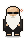

Room for the work.
He stretches, sips his tea, and stands on the window you’re working in. Play some music and the headphones go on. Throw him across the screen; he lands on his feet. Let him be quiet.
SMALL COMPANION. A LITTLE MORE SPACE.
A quiet pixel guy who sits on your Mac. A thoughtful word. A slow breath. Someone to keep you company while you make your thing.
Give Rick a place on your MacFree · Source available · macOS · No account
Make something
that feels like you.
“The little pixel guy just sitting there is kind of charming while I work.”
Maithili Gordy · An early user
GOOD COMPANY, LIGHTLY HELD
He stretches, sips his tea, and stands on the window you’re working in. Play some music and the headphones go on. Throw him across the screen; he lands on his feet. Let him be quiet.
Choose a quiet 25-minute sit, or one guided minute of breathing. No streaks. No score. End it whenever you like.
Keep the lines that find you at the right moment. Copy a little picture to share with someone who might need one.
WHEN YOU WORK WITH CLAUDE CODE OR CODEX
Rick shows when your coding agent is working, needs your attention, or has finished a turn. Each session keeps its own status, so one project can’t hide another’s request.
Optional. Rick is good company all on his own.

WorkingA little space to step away.A SMALL ARRIVAL
Open Terminal on your Mac, paste this line, and press Return. He’ll appear in the bottom-right corner.
macOS with Xcode Command Line Tools. Builds on your Mac.
curl -fsSL https://rick-buddy.netlify.app/install.sh | shAlready have Rick? Run the same command once to repair older installs and bring him up to date. Your saved preferences and edited lines stay.
Press ⌘ Space, type Terminal, and press Return. Paste the command above and press Return again.
If your Mac asks for developer tools, run xcode-select --install, finish that installation, then run Rick’s command again.
The installer asks if Claude Code is on your Mac. Say yes, then open a new Claude Code session. You can also connect later through Rick’s menu bar head → Settings → Follow Claude Code.
For Codex coding tasks, choose Settings → Follow Codex. In Codex, open /hooks to review and trust Rick’s hooks, then start a new session. This follows Codex tasks; regular ChatGPT browser conversations are not connected.
Your saved thoughts, preferences, and agent status stay local. Rick’s hooks keep only a shortened session identifier, project folder name, and status. They don’t save your prompts, code, or transcripts. The app contacts GitHub to check for and download updates.
Click his menu bar head for a quiet hour, or open Settings to change chatter, size, text size, and startup behavior.
To remove the source-installed app, run ~/.rubin-buddy/uninstall.sh. This removes Rick, his saved data, and his own Claude hooks.
Make your thing.
He’ll be here.